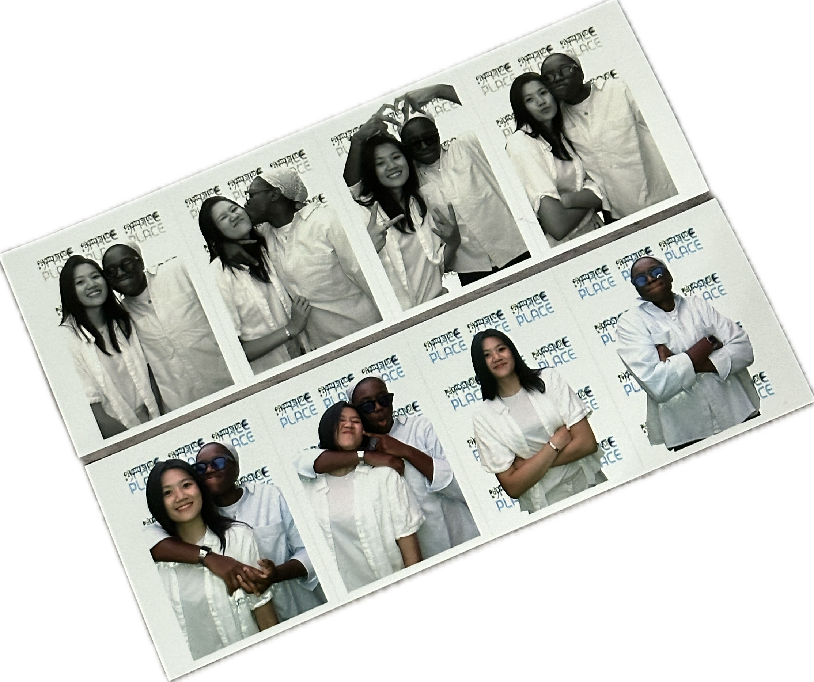

Mallow,
Good morning, cutie, is what I would usually text you when I wake up. But these last few months, I haven't said it quite as much because now, when I wake up, I just roll over and give you a few grunts to let you know I’m awake. And honestly? I love it. After all those mornings apart, there’s something so special about just being here with you, no screens, no waiting for a message—just the quiet comfort of having you right beside me.
I can’t believe how much I appreciate the little things now. Those moments we used to dream about, like waking up together. We spent so long apart, and now, every day feels like a gift. It’s crazy how quickly I’ve come to feel at home in this new reality with you—together, in the same place, sharing everything from the smallest routines to the biggest dreams.
I love that I get to share my days with you, every single one. You’re my heart, my best friend, and I can’t wait for all the mornings ahead, all the moments we’ll share, and all the life we’ll live together.
Forever and always, I am yours. Happy Valentine's Day, my love. ❤️
With all my heart,
Squish